没有哪个港口，是永远的停留
原文：https://mp.weixin.qq.com/s?__biz=MzAwMzIzOTk5OQ==&mid=2247530311&idx=2&sn=6457daf8467645b5aa3f5b9cdb8903c1&chksm=9b3c0e17ac4b8701731372ed4ae23fc860ed3d375377c6e6d62c252e7a2121273c850867bad7#rd 合集：漫谈胡侃
一、人生是旷野
博士毕业后有些"产后抑郁"，猛的从读博节奏中撤出来，对未来生活有些无所适从。好不容易毕业了，现在最想做的是到处走走，算是替大家自由 。如果大家恰好在硕博或生活中遇到了困难与挑战，需要心灵鸡汤；又或是有生信课题需要交流，亦或是课题组需要生信讲座/教学；又或是各位老师希望和我们联合完成一些课题或项目。那么我都可以在来到大家的城市时，与大家进行交流~大家可以通过邮件联系我：wchcpu2019@163.com，全球可飞，已走完日本、成都、烟台、西安、兰州、武威，最近大概率在苏州、上海、杭州活动。我们也欢迎大家随时来生信基地兼职/工作/参观。
。如果大家恰好在硕博或生活中遇到了困难与挑战，需要心灵鸡汤；又或是有生信课题需要交流，亦或是课题组需要生信讲座/教学；又或是各位老师希望和我们联合完成一些课题或项目。那么我都可以在来到大家的城市时，与大家进行交流~大家可以通过邮件联系我：wchcpu2019@163.com，全球可飞，已走完日本、成都、烟台、西安、兰州、武威，最近大概率在苏州、上海、杭州活动。我们也欢迎大家随时来生信基地兼职/工作/参观。
** **
****二、逛吃逛吃
张裕博物馆去了
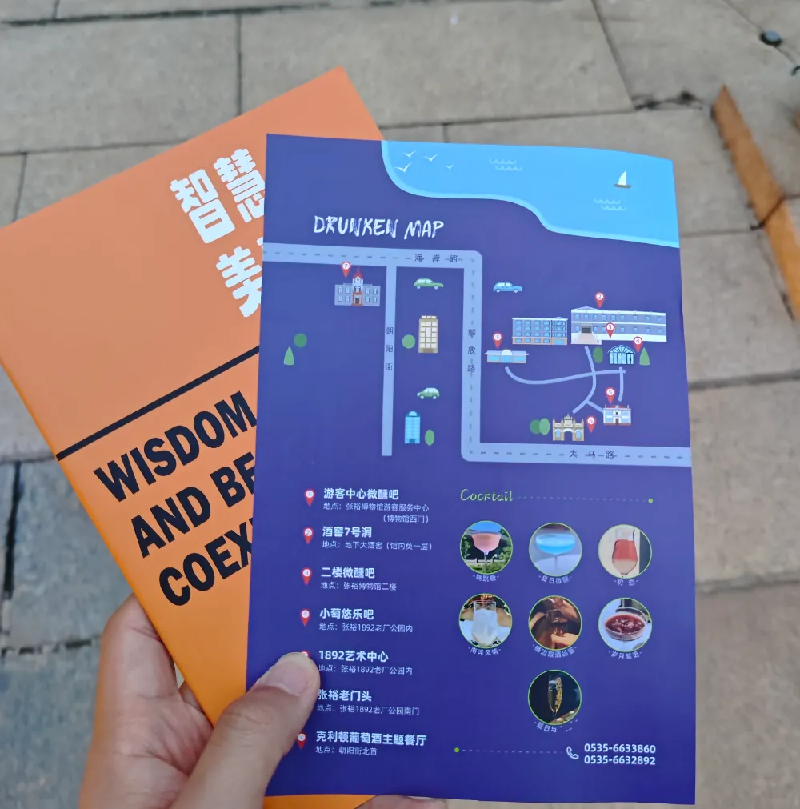
图1 张裕博物馆打卡手册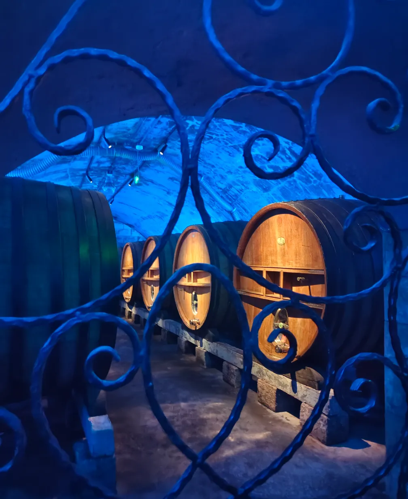
图2 酒窖7号洞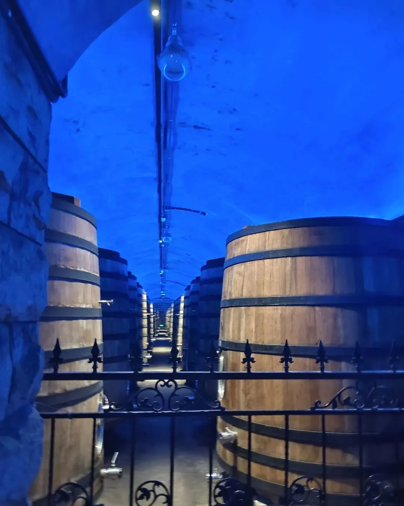
图3 超大酒桶 烂怂大雁塔去了，各个角度都看了，西安对文物的保护真的一级棒，没得说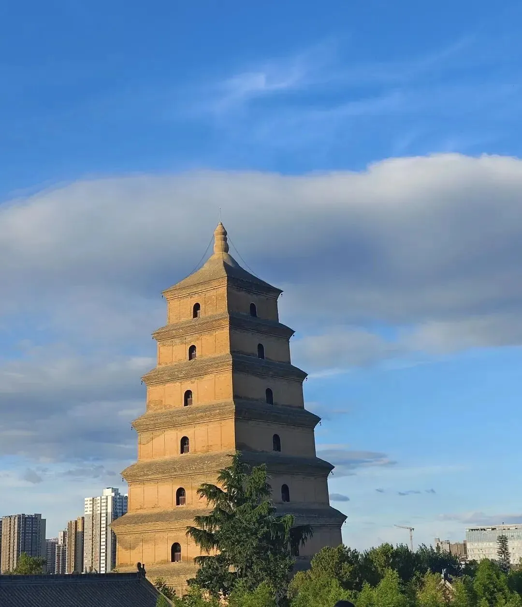
图4 大雁塔日景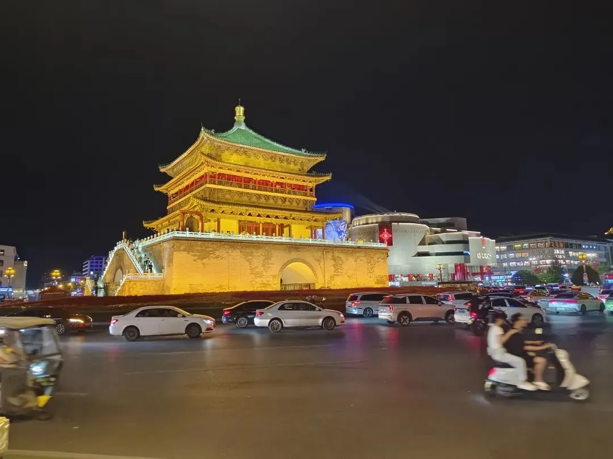
图5 钟楼夜景接下来是武威站，先瞅瞅大凉州的城门
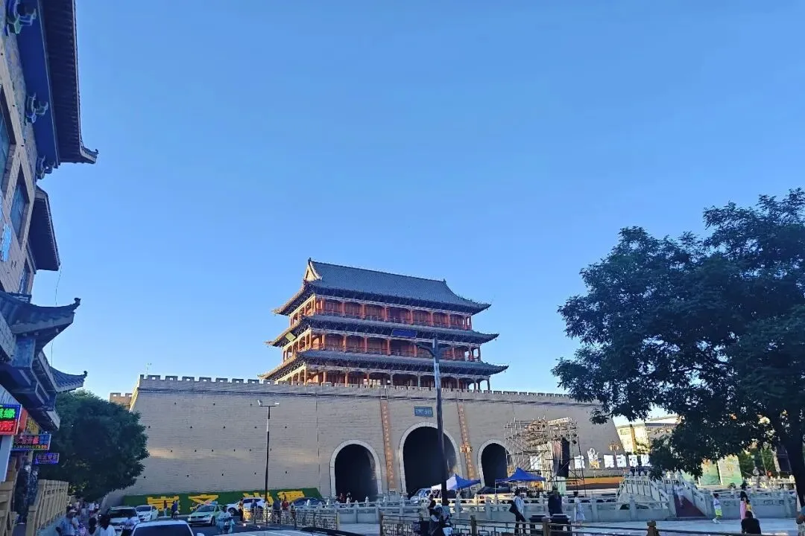
图6 南门楼，你敢信这已经快八点了** **
大放哈是真的大：
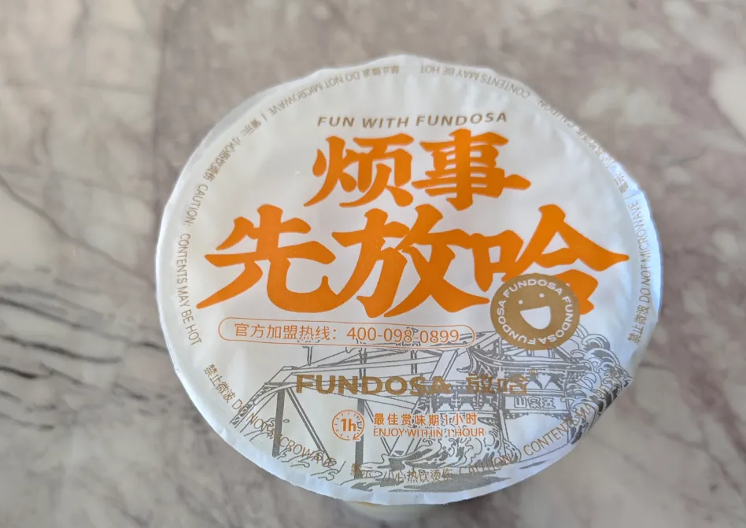
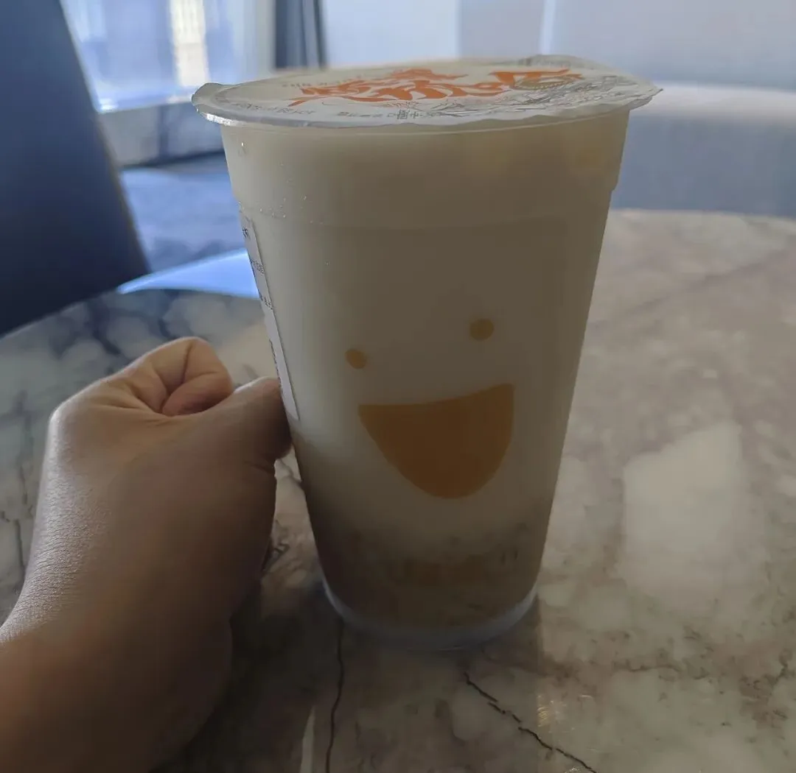
图7 甜胚子奶茶** **
黄河楼也是一绝，门票30￥，推荐电梯登顶，然后向下步行游览，在此处领略大兰州和黄河的历史再合适不过(江浙沪选手第一次看见黄河)。
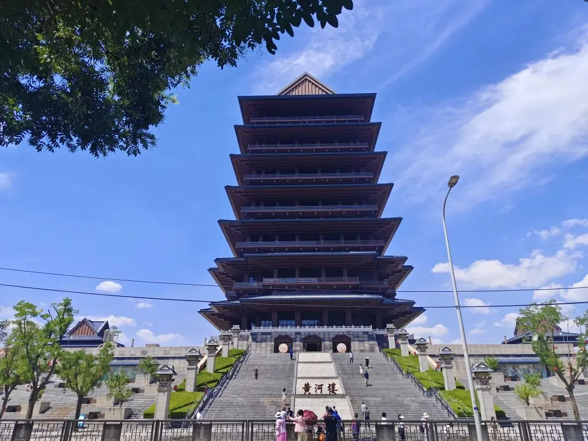
图8 黄河楼，按正常住宅算，得有四十层那么高吧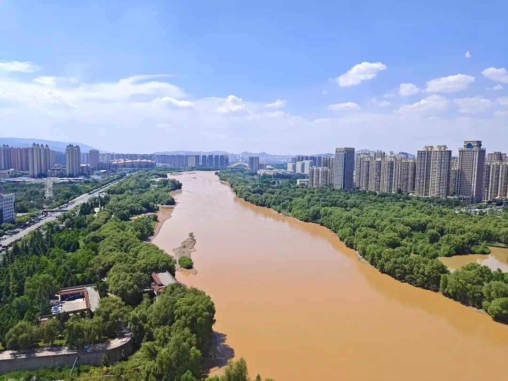
图9 这什么不用多说了吧中山桥，没玩明白：
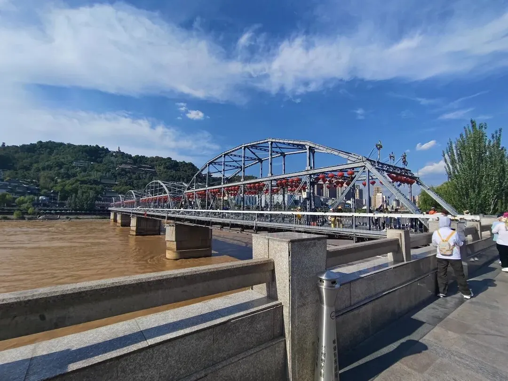
图10 晒晒晒，只看到快艇没看到羊皮筏子** **
最后再主推一下牛肉面，谢赫和 磨沟沿无脑冲就完事了，不好吃Biomamba包赔：
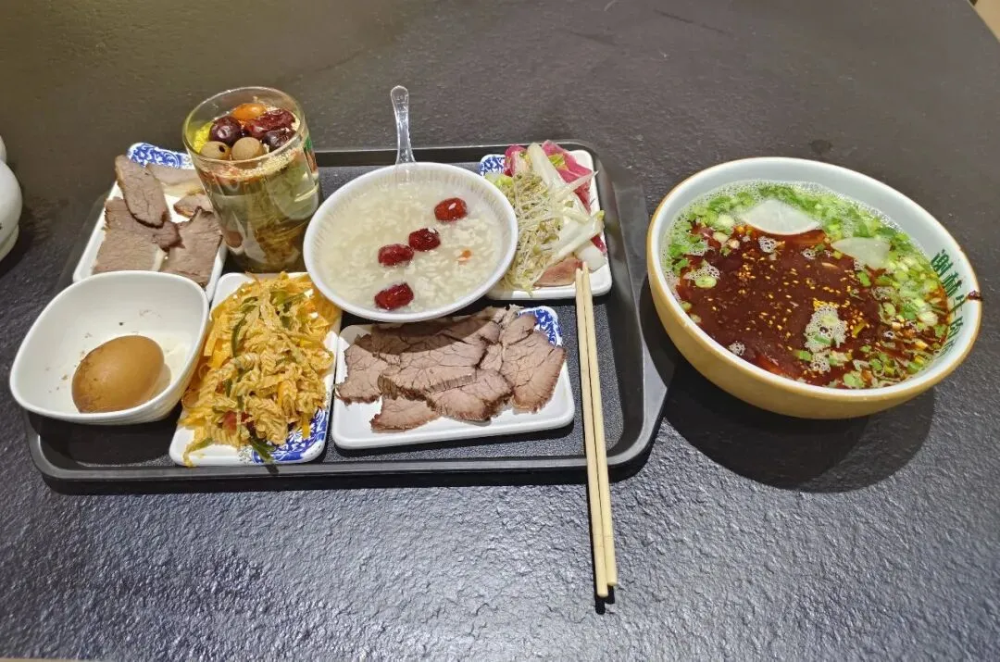
图11 谢赫牛肉面，就在中山桥边上** **
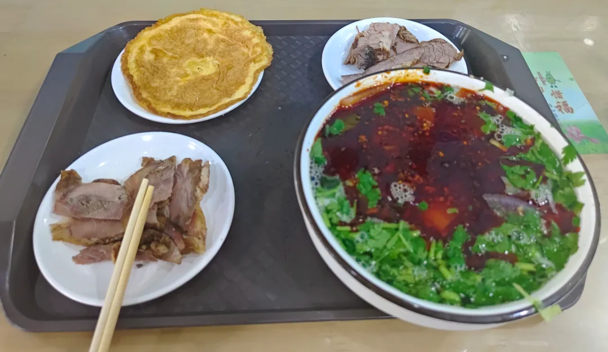
图12磨沟沿，别去总店，人巨多，分店一样好吃
如何联系我们

 留一个领取资料、开箱即用的单细胞分析镜像的微信号[Biomamba_zhushou]，方便各位随时交流。同时我们也构建了交流群矩阵，欢迎大家入群讨论。
大家可以阅读完这几篇之后添加给生信入门初学者的小贴士
没有检索，就没有发言权
留一个领取资料、开箱即用的单细胞分析镜像的微信号[Biomamba_zhushou]，方便各位随时交流。同时我们也构建了交流群矩阵，欢迎大家入群讨论。
大家可以阅读完这几篇之后添加给生信入门初学者的小贴士
没有检索，就没有发言权
已有生信基地联系方式的同学无需重复添加

 您点的每个赞和在看，我都认真当成了喜欢
您点的每个赞和在看，我都认真当成了喜欢